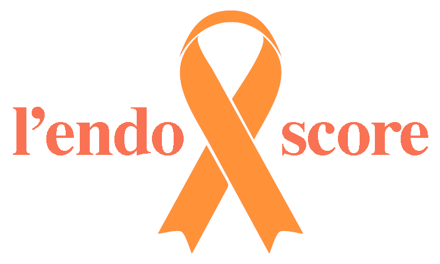

Ce questionnaire vise à mieux comprendre les impacts psychologiques de l'endométriose, une maladie affectant plus d'une femme sur dix dans le monde, souvent associée à des douleurs invalidantes et à l'infertilité. En étudiant les dimensions du quotidien et de la douleur chez les personnes touchées, l'objectif est d'améliorer la prise en charge de cette condition.
Temps estimé du questionnaire est de d’environ 10 min